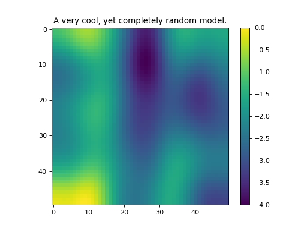
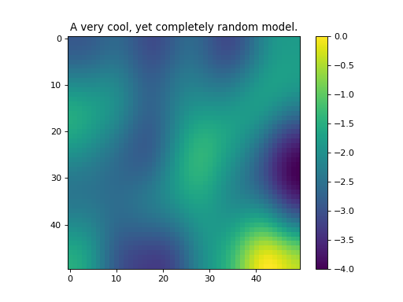

Utils¶
Matrix Utilities¶
-
SimPEG.utils.mat_utils.diagEst(matFun, n, k=None, approach='Probing')[source]¶ Estimate the diagonal of a matrix, A. Note that the matrix may be a function which returns A times a vector.
Three different approaches have been implemented:
Probing: cyclic permutations of vectors with 1’s and 0’s (default)
Ones: random +/- 1 entries
Random: random vectors
- Parameters
- Return type
- Returns
est_diag(A)
Based on Saad http://www-users.cs.umn.edu/~saad/PDF/umsi-2005-082.pdf, and https://www.cita.utoronto.ca/~niels/diagonal.pdf
-
SimPEG.utils.mat_utils.dip_azimuth2cartesian(dip, azm_N)[source]¶ Function converting degree angles for dip and azimuth from north to a 3-components in cartesian coordinates.
INPUT dip : Value or vector of dip from horizontal in DEGREE azm_N : Value or vector of azimuth from north in DEGREE
OUTPUT M : [n-by-3] Array of xyz components of a unit vector in cartesian
Created on Dec, 20th 2015
@author: dominiquef
Solver Utilities¶
-
SimPEG.utils.solver_utils.SolverWrapD(fun, factorize=True, checkAccuracy=True, accuracyTol=1e-06, name=None)[source]¶ Wraps a direct Solver.
import scipy.sparse as sp Solver = solver_utils.SolverWrapD(sp.linalg.spsolve, factorize=False) SolverLU = solver_utils.SolverWrapD(sp.linalg.splu, factorize=True)
Curv Utilities¶
Mesh Utilities¶
Model Builder Utilities¶
-
SimPEG.utils.model_builder.addBlock(gridCC, modelCC, p0, p1, blockProp)[source]¶ Add a block to an exsisting cell centered model, modelCC
- Parameters
gridCC (numpy.ndarray) – mesh.gridCC is the cell centered grid
modelCC (numpy.ndarray) – cell centered model
p0 (numpy.ndarray) – bottom, southwest corner of block
p1 (numpy.ndarray) – top, northeast corner of block
- BlockProp float blockProp
property to assign to the model
- Return numpy.ndarray, modelBlock
model with block
-
SimPEG.utils.model_builder.getIndicesBlock(p0, p1, ccMesh)[source]¶ Creates a vector containing the block indices in the cell centers mesh. Returns a tuple
The block is defined by the points
p0, describe the position of the left upper front corner, and
p1, describe the position of the right bottom back corner.
ccMesh represents the cell-centered mesh
The points p0 and p1 must live in the the same dimensional space as the mesh.
-
SimPEG.utils.model_builder.defineBlock(ccMesh, p0, p1, vals=None)[source]¶ Build a block with the conductivity specified by condVal. Returns an array. vals[0] conductivity of the block vals[1] conductivity of the ground
-
SimPEG.utils.model_builder.defineElipse(ccMesh, center=None, anisotropy=None, slope=10.0, theta=0.0)[source]¶
-
SimPEG.utils.model_builder.getIndicesSphere(center, radius, ccMesh)[source]¶ Creates a vector containing the sphere indices in the cell centers mesh. Returns a tuple
The sphere is defined by the points
p0, describe the position of the center of the cell
r, describe the radius of the sphere.
ccMesh represents the cell-centered mesh
The points p0 must live in the the same dimensional space as the mesh.
-
SimPEG.utils.model_builder.defineTwoLayers(ccMesh, depth, vals=None)[source]¶ Define a two layered model. Depth of the first layer must be specified. CondVals vector with the conductivity values of the layers. Eg:
Convention to number the layers:
<----------------------------|------------------------------------> 0 depth zf 1st layer 2nd layer
-
SimPEG.utils.model_builder.scalarConductivity(ccMesh, pFunction)[source]¶ Define the distribution conductivity in the mesh according to the analytical expression given in pFunction
-
SimPEG.utils.model_builder.layeredModel(ccMesh, layerTops, layerValues)[source]¶ Define a layered model from layerTops (z-positive up)
- Parameters
ccMesh (numpy.ndarray) – cell-centered mesh
layerTops (numpy.ndarray) – z-locations of the tops of each layer
layerValue (numpy.ndarray) – values of the property to assign for each layer (starting at the top)
- Return type
- Returns
M, layered model on the mesh
-
SimPEG.utils.model_builder.randomModel(shape, seed=None, anisotropy=None, its=100, bounds=None)[source]¶ Create a random model by convolving a kernel with a uniformly distributed model.
- Parameters
shape (tuple) – shape of the model.
seed (int) – pick which model to produce, prints the seed if you don’t choose.
anisotropy (numpy.ndarray) – this is the (3 x n) blurring kernel that is used.
its (int) – number of smoothing iterations
bounds (list) – bounds on the model, len(list) == 2
- Return type
- Returns
M, the model
(Source code, png, hires.png, pdf)

{kind=link}
{kind=link}
-
SimPEG.utils.model_builder.PolygonInd(mesh, pts)[source]¶ Finde a volxel indices included in mpolygon (2D) or polyhedra (3D) uniformly distributed model.
- Parameters
shape (tuple) – shape of the model.
seed (int) – pick which model to produce, prints the seed if you don’t choose.
anisotropy (numpy.ndarray) – this is the (3 x n) blurring kernel that is used.
its (int) – number of smoothing iterations
bounds (list) – bounds on the model, len(list) == 2
- Return type
- Returns
M, the model
(Source code, png, hires.png, pdf)

{kind=link}
{kind=link}
Interpolation Utilities¶
Counter Utilities¶
1 2 3 4 5 6 7 8 9 10 11 12 13 14 15 16 | class MyClass(object):
def __init__(self, url):
self.counter = Counter()
@count
def MyMethod(self):
pass
@timeIt
def MySecondMethod(self):
pass
c = MyClass('blah')
for i in range(100): c.MyMethod()
for i in range(300): c.MySecondMethod()
c.counter.summary()
|
1 2 3 4 5 | Counters:
MyClass.MyMethod : 100
Times: mean sum
MyClass.MySecondMethod : 1.70e-06, 5.10e-04, 300x
|
The API¶
-
class
SimPEG.utils.counter_utils.Counter[source]¶ Counter allows anything that calls it to record iterations and timings in a simple way.
Also has plotting functions that allow quick recalls of data.
If you want to use this, import count or timeIt and use them as decorators on class methods.
class MyClass(object): def __init__(self, url): self.counter = Counter() @count def MyMethod(self): pass @timeIt def MySecondMethod(self): pass c = MyClass('blah') for i in range(100): c.MyMethod() for i in range(300): c.MySecondMethod() c.counter.summary()